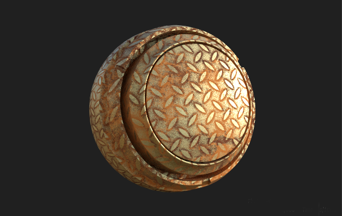
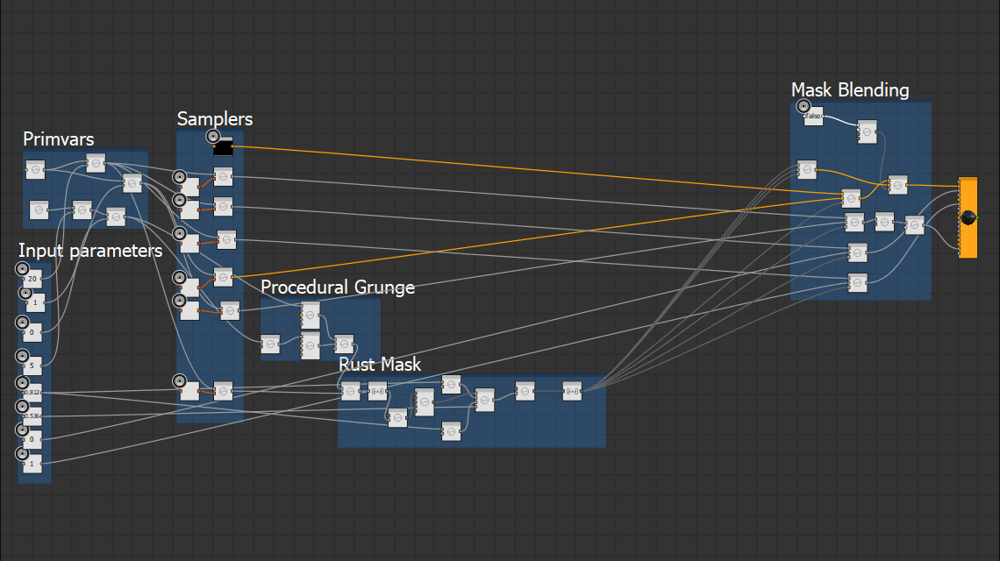
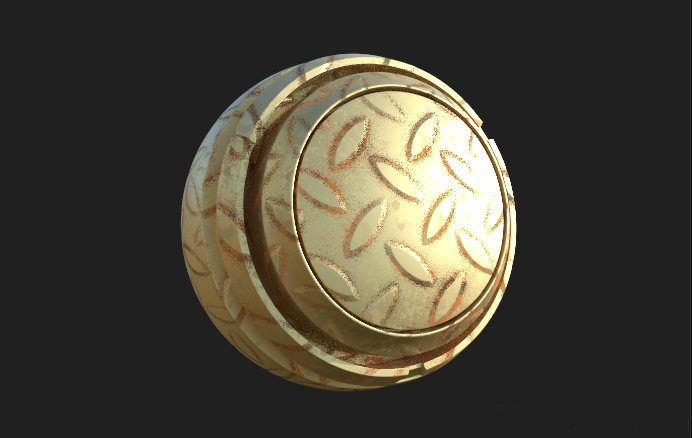
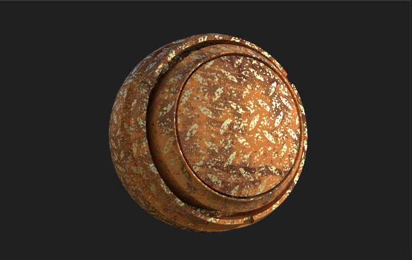

Floor Sample

The floor sample is a graph that mixes procedural textures and procedural shading in order to add rust to a surface
based on shader parameters.
Features Shown
-
Procedural world space noise for micro details in masking
-
Managing different textures at different resolution and tilings to save texture usage
-
Procedural mask generation
-
Texture binding
The textures
The sample is located in data/substances in the plugin directory. It contains two graphs, the MaterialX
graph called Shader and the procedural texture graph called Floor.
The textures produced are by the Floor Graph
-
basecolor
the base color map for the floor
-
normal
the normal map for the floor
-
roughness
the roughness map for the floor
-
metallic
the metallic map for the floor
-
Rust_Basecolor
The basecolor for the rust map
-
Rust_Normal
The normal for the rust map
-
Floor_AO
The ambient occlusion map used to drive rust. This one is tiled like the normal map and controls areas
where more or less rust should show up
The first thing to note is how
normal
and
floor_AO
are lower resolution textures that can be tiled independently
of the rest of the textures meant for a repetitive pattern. The two rust maps are also tiled individually to make it
possible to have more high frequency details in the rust.
The Shader

The shader is built in the following parts:
-
Input Parameters
Different parameters allowing the shader to change appearance
-
Primvars
This is where positions and UVs are looked up and scaled for usage by different samplers/procedurals
-
Samplers
Texture samplers fetching texture data from the Floor comp graph
-
Procedural Grunge
Noises for producing world space perturbations when generating the mask for where the rust is
-
Rust Mask
Where the procedural grunge, texture data and parameters are used to compute a rust mask
-
Mask Blending
The textures are mixed with based on the rust mask
The parameters
-
rust_roughness
Global roughness value for rusty parts
-
rust_metallic
Global metallic for the rusty parts
-
rust_pow
Controls the sharpness of the border between rusty and non-rusty part
-
rust_factor
Sets the amount to rust to have on the object
-
grunge_scale
Controls the scale of the grunge modulated into the rust mask
-
grunge_offset
Offsets the grunge in the rust
-
rust_tiling
Tiles the Rust_basecolor texture for more or less texture detail/tiling in the rust
-
pattern_tiling
Tiles the normal map (and the ao map) over the object
-
visualize_mask
Debug setting to visualize the rust mask in the basecolor
Tweaking parameters on the shader only we can create multiple different looks

